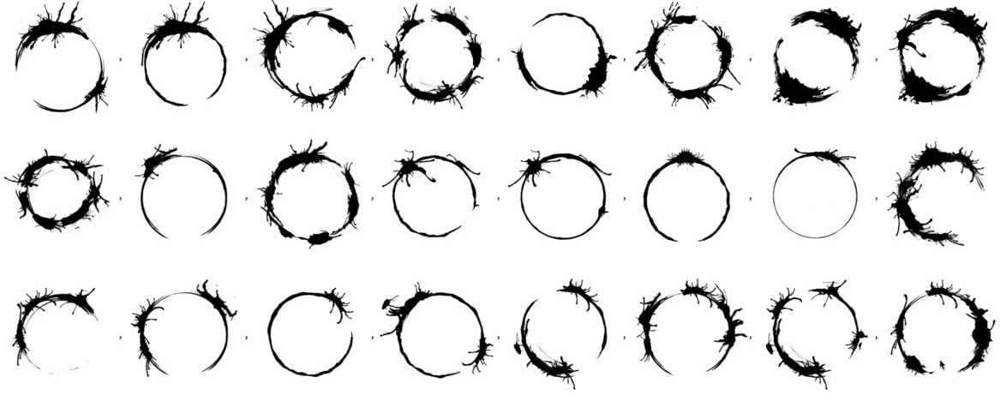

When Android met FP
Learning new things is hard, and rejecting the unknown is part of human nature. There’s some reaction inside us that makes our minds reject anything new in some way.
Then time flies and you start getting used to it.
Getting rid of the noise
Even if it’s part of our nature, these reactions are irrational and not related in any way to how we think. It’s just how we react in the beginning. We can be scared, but then there’s always our intuition beyond that. If we detect that there’s something valuable on that new thing, we smartly put all our efforts on trying to understand and remove the noise around it. That’s also part of our nature, as engineers. We are proactive.
Remember the first time we saw ReactiveX logo, some years ago?.
The Jargon™️

A new language and its new grammars. A new jargon. A new paradigm, which at the end of the day is also a language by itself in the most generic sense. Each term on it seems incomprehensible and hard to master, not because it’s complex, but because it’s different.
And we are curious. We try to learn each one of the terms separately. It looks like the easiest way to gradually understand the whole thing. Either we Try, or abandon. We’ll probably need to be good Readers though.
The more we use this terms, the more natural they feel all together. It requires time and to use the language out there, in the real world. And practice is key.
If we keep moving, we’ll eventually have a glimpse on the connection between all the symbols. That’s how to learn a language. We will get familiarized with how and when to use each one of them. We’ll start to master the syntax, and to know how to read it. We already went through this process many times in the past, didn’t we?
After some time, we finally realize something. The jargon is not as scary as it was anymore. We start to notice some interesting connections with our own language, the one we are used to. Our knowledge keeps growing, and our mind stays open.
The more we learn about these connections, our hability to express ourselves becomes broader. We gain perspective and resources to communicate and to solve problems. Even though we can end up not using this language in the future, these new concepts will make us richer in terms of expressivity.
Ideally we’ll start mixing languages and concepts, becoming able to use the best of all worlds to express our needs and solve our problems.
Reaching familiarity
After this little history, lets get back to what is worth about FP. The more we read about it and use it, the more we’ll notice something else.
There’s the same bunch of words repeated every single time, regardless of the problems we are solving. We map, flatMap, fold, combine, compose… Sounds like something we’ve been doing all this time, doesn’t it?.
FP can be a bit overwhelming in the beginning, that’s for sure. But as soon as you understand the main purpose of its main pieces, you’ll find yourself using the same stuff all the time. These abstractions talk about how to operate over the data, which is not related to any semantics for a given problem, but apply to any different use cases.
You’ll get familiar with all those if you want to, in case you’re not already, and when that time comes, you’ll find it much easier than what it seemed to be.
Once you do, you’ll have enough knowledge to go even further and read your programs in a more abstract way based on their behaviours and the way they operate with the data. Including mobile apps. That’ll make those much more testable and deterministic, therefore easier to reason about.
Do we need a change?
As engineers, our nature is to evolve and learn new stuff. We already do that, on a daily basis. Moving to FP is obviously not required, though. You’re free to keep the same approaches and concepts you feel comfortable with, and it’s completely legit. Same story for not changing languages and paradigms.
Said that, it’s always a good thing to learn new things and be able to evaluate, because they might fit. They might be helpful. Once you are ready for it, you’ll be on your full right to reject them if you feel they’re not fitting for you or your team.
About Arrow itself
As a team, we would like people to become interested on learning new ways of coding and become able to evaluate and bring those to discussion topics into their professional environments, which we believe is always constructive and positive.
The same way, we’re so willing to keep getting productive feedback, and also trying to find ways to make this new paradigm more accessible to everybody. If we come back to the jargon “problems” and its learning curve (which we’re very aware of), we’d never hesitate on changing any names if the community finds any clear issues with any of the current ones. I’d say we’ve done it more than a couple of times already . We don’t care a lot about the jargon, but more about it being usable and understandable.
Final thoughts
Let’s always keep in mind that Functional Programming is a paradigm, which have been proven to be useful and effective many times before. It’s not about platforms anymore. Paradigms can be applied over any problem and any program, the same than languages. There’s not just a subset of programs that are valid for it. It’s neither about being better or worse than OOP.
Android, as a system with a frontend layer, database and network queries, and much more, is based on side effects. But we learned long ago to abstract us away from these. That’s how layered / decoupled architectures were born. As long as you’re outside of the “dangerous” boundaries, you’re free to program in the way that fits better your needs.
Let’s also remember that to have some fear to the unknown defines us, the same way as being curious and adapting to new things. Promoting change implies growth as persons and engineers.
Also note that there is a big educational component required before to accept a new paradigm that we’ve not been used to by history. We believe it’s worth it.
Stay curious and continuously learning, that’s part of what we are.
This post has not any intentions on promoting conflict or blaming anybody’s attitude, but to promote constructive feedback. Not just for Arrow or FP, but anything. We are all on the same boat, and one of the most valuable things we have in the Android community, in my opinion, is that we know how to progress all together. There are not many communities that can say that.
Want to support me?
If you reached this point you might consider supporting me for boosting my will to write. If that’s the case, here you have a button, really appreciated! 🤗
Supported or not, I will keep writing and providing content for free ✅

Related links
If you’re interested on Arrow and Functional Programming over Kotlin, have a read one some of the other articles I’ve posted about this subject. You can also follow me on Twitter.